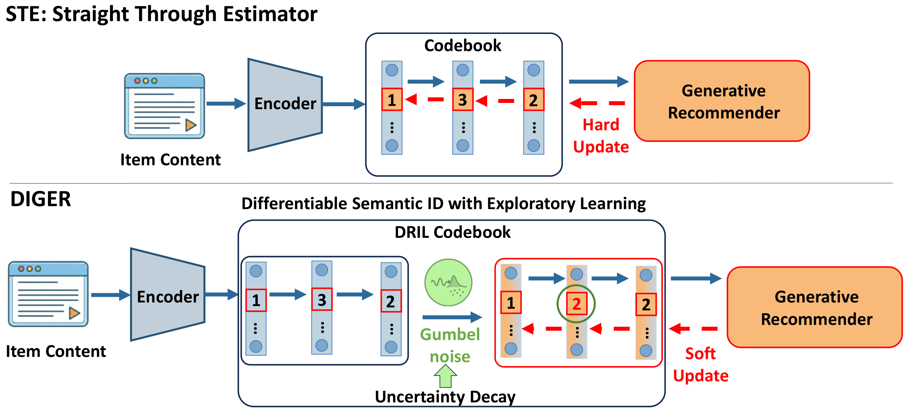
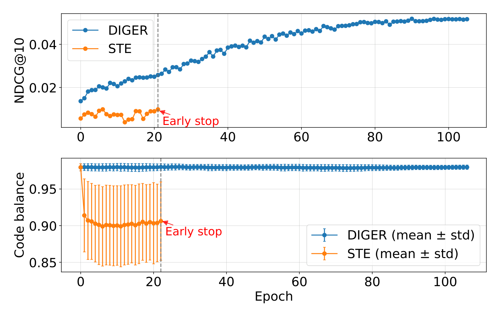

DIGER: Differentiable Semantic ID for Generative Recommendation
Подробное саммари статьи:
Авторы: Junchen Fu, Xuri Ge, Alexandros Karatzoglou, Ioannis Arapakis, Suzan Verberne, Joemon M. Jose, Zhaochun Ren.
Аффилиации: University of Glasgow; Shandong University; Amazon; Telefonica Scientific Research; Leiden University.
1. Коротко: о чем статья
DIGER предлагает сделать semantic IDs (SID) дифференцируемой частью генеративного рекомендателя, а не замороженным артефактом отдельного tokenizer'а. В стандартном pipeline типа TIGER сначала обучается RQ-VAE, который назначает каждому item'у дискретную последовательность токенов, а затем Transformer учится генерировать эти токены по истории пользователя. Проблема в том, что recommendation loss не может повлиять на codebook и item-to-code mapping, потому что semantic IDs заморожены. DIGER показывает, что наивное решение через straight-through estimator (STE) приводит к catastrophic codebook collapse: несколько кодов захватывают подавляющее большинство item'ов, остальные коды остаются мертвыми. Решение DIGER называется DRIL (Differentiable Semantic ID with Exploratory Learning): в assignment logits добавляется Gumbel noise, а backward pass использует soft probability distribution, позволяя нескольким кодам получать градиентный сигнал одновременно. Две стратегии uncertainty decay (SDUD и FrqUD) постепенно снижают шум, переводя обучение из режима exploration в exploitation.
2. Контекст: generative recommendation и objective mismatch
В генеративных рекомендательных системах item'ы представляются дискретными semantic IDs, а задача next-item recommendation формулируется как autoregressive generation последовательности токенов. Это требует двух обученных компонентов: tokenizer (обычно RQ-VAE), который строит mapping item → token tuple, и generator (Transformer), который предсказывает следующий token tuple по истории пользователя.
Стандартная двухстадийная схема обучает эти компоненты раздельно. Tokenizer оптимизирует reconstruction/content objective, а generator оптимизирует recommendation objective. Между ними существует fundamental mismatch: semantic IDs могут быть хорошими с точки зрения восстановления item embedding'а, но неудобными для autoregressive generation и ranking. Поскольку SID заморожены после первой стадии, recommendation loss не распространяет градиенты обратно в codebook.
DIGER формализует это наблюдение теоретически. Теорема A.1 показывает, что двухстадийное обучение оптимизирует recommendation loss только в restricted subset пространства параметров tokenizer'а: \(J_{\text{2st}}^* = \inf_{\phi \in A} g(\phi)\), тогда как joint optimization имеет доступ к полному пространству: \(J_{\text{e2e}} = \inf_{\phi \in \Phi} g(\phi)\). Поскольку \(A \subseteq \Phi\), всегда выполняется \(J_{\text{e2e}} \le J_{\text{2st}}^*\), а теорема A.2 показывает, что разрыв может быть произвольно большим.
3. Проблема: почему наивная дифференцируемость ведет к collapse
Очевидное решение objective mismatch -- сделать SID дифференцируемыми через straight-through estimator. Forward pass остается дискретным (argmax выбирает ближайший code vector), а backward pass передает градиенты мимо недифференцируемого argmax. Однако эксперименты DIGER показывают, что STE приводит к catastrophic performance degradation.
На B-Shop STE дает Recall@10 = 0.0134 и NDCG@10 = 0.0067, что в 5 раз хуже, чем даже двухстадийный baseline (Recall@10 = 0.0610, NDCG@10 = 0.0331). Причина -- codebook collapse: ранние deterministic assignment'ы быстро концентрируют вероятность на нескольких codebook entries, entropy распределения кодов падает, большинство кодов перестают использоваться, и дальнейшие градиенты уже не могут восстановить баланс. Визуализации code usage (Figure 7) показывают, что STE имеет severe imbalance, особенно в глубоких quantization layers.
Дополнительная проблема STE -- нестабильность SID drift. Figure 6 показывает, что STE демонстрирует резкие, непредсказуемые изменения SID assignments между эпохами, тогда как DIGER эволюционирует более плавно.
4. Метод DIGER: DRIL и uncertainty decay
4.1. Preliminaries: semantic IDs и autoregressive generation
Каждый item \(v \in V\) кодируется semantic ID длины \(m\):
История пользователя представляется конкатенацией SID'ов:
Autoregressive generation моделирует:
Основной training loss -- negative log-likelihood:
4.2. DRIL: Gumbel noise и soft update
Для каждого item'а \(v\) на quantization level \(j\) считаются similarity logits к codebook entries:
Вместо детерминированного argmax, DIGER добавляет Gumbel noise и строит Gumbel-Softmax distribution:
где \(g_{v,j,i} \sim \text{Gumbel}(0,1)\) -- i.i.d. Gumbel noise, \(\tau\) -- temperature. Для forward pass и indexing используется hard assignment:
Но для backward pass используется soft weighted sum:
Это ключевое отличие от STE: несколько candidate codes получают gradient signal, а не только победивший codeword. Gumbel noise обеспечивает stochastic exploration, особенно на ранних эпохах обучения.
4.3. SDUD: Standard Deviation Uncertainty Decay
SDUD связывает масштаб шума \(\sigma\) с recommendation loss через auxiliary objective:
где \(\sigma \ge 0\) -- обучаемый параметр, \(\lambda > 0\) -- гиперпараметр. Оптимальное значение в замкнутой форме:
По мере уменьшения \(\mathcal{L}_{\text{gen}}\) в процессе обучения \(\sigma^*\) сокращается, автоматически переводя систему из exploration в exploitation. Когда \(\sqrt{\mathcal{L}_{\text{gen}}} \approx \lambda\), шум исчезает и assignment становится детерминированным.
4.4. FrqUD: Frequency-based Uncertainty Decay
FrqUD использует EMA-сглаженную частоту использования кодов:
Определяется threshold для hot codes:
Коды делятся на high-frequency (hot) и low-frequency:
Gumbel noise применяется только к hot codes (которые уже достаточно часто выбираются), а cold codes получают deterministic assignment (без шума), чтобы не сбивать их нестабильным exploration'ом. Это селективный подход: exploration там, где codebook уже перенасыщен, и exploitation там, где коды еще набирают usage.
4.5. Joint training objective
Итоговый loss объединяет три компонента:
где \(\mathcal{L}_{\text{gen}}\) -- recommendation objective (основной driver), \(\mathcal{L}_{\text{vq}}\) и \(\mathcal{L}_{\text{recon}}\) -- стандартные RQ-VAE losses для предотвращения distribution drift. Модель инициализируется из pretrained RQ-VAE; VQ и reconstruction losses остаются малыми по масштабу. Авторы специально не используют code-diversity loss, чтобы изолировать эффект differentiable SID.
4.6. Пошаговый алгоритм DIGER
- Pretrain tokenizer. Сначала обучается обычный RQ-VAE по content/text embeddings, чтобы получить начальный codebook и hard SID mapping без recommendation gradients.
- Initialize generator. User histories переводятся в SID sequences, T5-style encoder-decoder обучается генерировать target SID как в TIGER-like pipeline.
- Включить DRIL вместо STE. На каждом quantization level считаются logits до codewords; forward использует hard Gumbel argmax, backward использует soft Gumbel-Softmax weighted sum.
- Передать recommendation loss в tokenizer. \(\mathcal{L}_{\text{gen}}\) обновляет не только generator, но и tokenizer/codebook через soft path; \(\mathcal{L}_{\text{vq}}\) и \(\mathcal{L}_{\text{recon}}\) удерживают representation от разрушения.
- Управлять exploration. SDUD уменьшает noise через loss-dependent \(\sigma\), а FrqUD применяет noise выборочно к hot codes, чтобы бороться с early code domination.
- Мониторить collapse signals. На каждой эпохе считаются code usage entropy, dead codes, incremental/cumulative SID drift и train-inference agreement.
- Финализировать hard mapping. На inference Gumbel noise выключается, item получает deterministic SID, который можно использовать в обычном constrained decoding / prefix tree.
5. Рисунки и что в них важно

Figure 1 использует метафору "brickmaker-builder": в обычном pipeline tokenizer (brickmaker) производит кирпичи (SID) не зная, как их будет использовать recommender (builder). В DIGER recommendation loss влияет на производство кирпичей. Рисунок четко показывает, где в обычной схеме происходит gradient blocking и как DIGER его устраняет.

Figure 2 -- диагностический рисунок на B-Shop. Верхняя панель показывает validation NDCG@10 по эпохам: DIGER стабильно растет, STE хаотичен и нестабилен. Нижняя панель показывает code balance (mean coverage over 3 codebook levels): у STE существенно больший разброс (error bars), что указывает на volatile, inconsistent code usage. Серая пунктирная линия отмечает эпоху early-stop для STE. Этот рисунок является центральным доказательством того, что code balance -- ранний diagnostic signal, а не второстепенная статистика.
6. Эксперименты
6.1. Датасеты
| Dataset | #Users | #Items | #Interactions | Avg. Length | Sparsity |
|---|---|---|---|---|---|
| B-Shop | 22,363 | 12,101 | 198,502 | 8.88 | 0.9993 |
| I-Shop | 24,772 | 9,922 | 206,153 | 8.32 | 0.9992 |
| Yelp | 30,431 | 20,033 | 304,524 | 10.01 | 0.9995 |
B-Shop содержит косметические товары, I-Shop -- музыкальные товары, Yelp -- рестораны. Content features извлекаются через LLaMA-7B из titles/descriptions. Evaluation использует leave-one-out protocol с ranking against full item set.
6.2. Implementation details
Tokenizer: pretrained RQ-VAE, codebook size \(K = 256\), sequence length \(m = 3\) (plus один conflict code). Recommender: T5-style encoder-decoder, 6+6 layers, hidden size 128. Optimizer: AdamW, weight decay 0.05. Gumbel temperature \(\tau = 2.0\). Hardware: два H100 GPU.
6.3. Сравнение с двухстадийным pipeline и STE
| Model | B-Shop R@10 | B-Shop N@10 | I-Shop R@10 | I-Shop N@10 | Yelp R@10 | Yelp N@10 |
|---|---|---|---|---|---|---|
| Two-Stage | 0.0610 | 0.0331 | 0.1058 | 0.0797 | 0.0407 | 0.0213 |
| STE | 0.0134 | 0.0067 | — | 0.0077 | — | — |
| DIGER (FrqUD) | 0.0683 | 0.0372 | 0.1138 | 0.0844 | — | — |
| DIGER (SDUD) | 0.0657 | 0.0361 | 0.1124 | 0.0823 | 0.0439 | 0.0227 |
Результаты наглядно демонстрируют три ключевых вывода. Во-первых, STE catastrophically ухудшает performance: на B-Shop Recall@10 падает с 0.0610 до 0.0134, что подтверждает codebook collapse hypothesis. Во-вторых, DIGER consistently улучшает двухстадийный baseline на всех датасетах: B-Shop N@10 растет с 0.0331 до 0.0372 (+12.4%), I-Shop N@10 с 0.0797 до 0.0844 (+5.9%), Yelp N@10 с 0.0213 до 0.0227 (+6.6%). В-третьих, FrqUD слегка превосходит SDUD на B-Shop и I-Shop.
6.4. Сравнение с SOTA baselines
| Model | B-Shop R@10 | B-Shop N@10 | I-Shop R@10 | I-Shop N@10 | Yelp R@10 | Yelp N@10 |
|---|---|---|---|---|---|---|
| SASRec | 0.0588 | 0.0313 | 0.0947 | 0.0690 | 0.0296 | 0.0152 |
| P5-CID | 0.0597 | 0.0347 | 0.0987 | 0.0751 | 0.0347 | 0.0181 |
| TIGER | 0.0610 | 0.0331 | 0.1058 | 0.0797 | 0.0407 | 0.0213 |
| LETTER | 0.0672 | 0.0364 | 0.1122 | 0.0831 | 0.0426 | 0.0231 |
| ETEGRec | 0.0615 | 0.0335 | 0.1106 | 0.0810 | 0.0415 | 0.0214 |
| DIGER | 0.0683* | 0.0372* | 0.1138* | 0.0844* | 0.0432 | 0.0227 |
DIGER достигает SOTA на B-Shop и I-Shop по обеим метрикам (p-value < 0.05). На Yelp DIGER показывает лучший R@10 (0.0432), но N@10 (0.0227) немного уступает LETTER (0.0231). Авторы объясняют это тем, что LETTER использует collaborative signals через SASRec-derived embeddings, тогда как DIGER работает только с text features. ETEGRec -- closest competitor по joint optimization approach, но требует примерно вдвое больше training time и все равно уступает DIGER.
7. Ablation study
7.1. Component ablation (B-Shop)
| Model | R@5 | R@10 | N@5 | N@10 |
|---|---|---|---|---|
| Two-Stage | 0.0395 | 0.0610 | 0.0262 | 0.0331 |
| Naive E2E (STE) | 0.0076 | 0.0134 | 0.0048 | 0.0067 |
| DIGER w/ UD | 0.0440 | 0.0683 | 0.0294 | 0.0372 |
| DIGER w/o UD | 0.0424 | 0.0679 | 0.0283 | 0.0365 |
| w/o Gumbel Noise | 0.0168 | 0.0283 | 0.0104 | 0.0141 |
| w/o soft update | 0.0422 | 0.0650 | 0.0281 | 0.0354 |
| w/ Gumbel tau annealing | 0.0419 | 0.0654 | 0.0273 | 0.0348 |
| w/ Gaussian Noise | 0.0389 | 0.0620 | 0.0253 | 0.0327 |
Ablation показывает иерархию компонентов. Удаление Gumbel noise -- самое разрушительное изменение: N@10 падает с 0.0365 до 0.0141, что близко к STE collapse. Замена Gumbel noise на Gaussian дает N@10 = 0.0327, что заметно хуже (Gumbel distribution лучше подходит для дискретного categorical assignment). Удаление uncertainty decay снижает N@10 с 0.0372 до 0.0365 -- improvement скромный, но consistent. Temperature annealing дает результат на уровне "без UD", подтверждая, что adaptive decay полезнее фиксированного schedule.
7.2. Codebook capacity и длина SID (B-Shop)
| K | m | R@10 | N@10 |
|---|---|---|---|
| 128 | 3 | 0.0655 | 0.0352 |
| 256 | 3 | 0.0683 | 0.0372 |
| 512 | 3 | 0.0660 | 0.0359 |
| 256 | 2 | — | 0.0301 |
| 256 | 3 | 0.0683 | 0.0372 |
| 256 | 4 | 0.0673 | 0.0373 |
Performance peaking при \(K = 256\): меньший codebook (128) недостаточно выразителен, а больший (512) затрудняет exploration. По длине SID: \(m = 2\) дает существенное падение (N@10 = 0.0301), \(m = 4\) почти не улучшает относительно \(m = 3\) (N@10 = 0.0373 vs 0.0372). Оптимум \(K = 256, m = 3\) обеспечивает лучший баланс expressivity и stable training.
8. Динамика SID и стабильность
Figure 6 анализирует три аспекта SID dynamics на B-Shop для четырех методов (STE, DIGER w/o UD, DIGER FrqUD, DIGER SDUD).
Incremental SID drift (доля item'ов, меняющих SID между эпохами): STE показывает резкие, непредсказуемые скачки drift'а, особенно в начале обучения. DIGER варианты эволюционируют более плавно.
Cumulative SID drift (доля item'ов, чей SID отличается от начального): DIGER с uncertainty decay показывает больший cumulative drift (до 40%), но это не деградация -- это полезная адаптация SID под recommendation objective. DIGER без UD имеет наименьший drift (ниже 15%), что означает ограниченную адаптацию и объясняет его чуть худшее качество.
Train-inference agreement (доля item'ов, у которых training-time sampled SID совпадает с inference-time deterministic SID): STE достигает perfect agreement по конструкции, но совпадение тривиально из-за collapse. DIGER без UD имеет persistently low agreement. DIGER с FrqUD быстро достигает и поддерживает высокое agreement; SDUD постепенно увеличивает agreement через снижение \(\sigma\).
Figure 7 визуализирует code usage distribution как heatmaps (\(256\) codebook entries на сетке \(16 \times 16\)) по трем quantization layers. DIGER с UD показывает наиболее равномерное использование; STE имеет severe collapse, особенно в глубоких layers.
9. Теоретический анализ
Помимо уже упомянутых теорем A.1 и A.2 о suboptimality двухстадийного обучения, статья доказывает Теорему A.3: effective code count \(\text{Eff}(q) = \exp(H(q))\) максимизируется при uniform distribution \(q_i = 1/K\), достигая \(\text{Eff}(q) = K\). Entropy bonus в objective pushes code distribution к более высокому Eff(q), т.е. лучшей codebook utilization. Это формально обосновывает, почему exploration через Gumbel noise помогает: оно действует как implicit entropy regularization на ранних этапах обучения.
10. Сильные стороны
Статья четко формулирует и теоретически обосновывает objective mismatch между tokenizer'ом и recommender'ом. Это не просто empirical observation, а формализованная проблема с proven lower bounds на suboptimality gap.
DIGER показывает, что наивная дифференцируемость (STE) может быть хуже замороженного tokenizer'а, что является контринтуитивным и практически важным предупреждением. Метод дает практически полезные diagnostics: code usage, SID drift, capacity sensitivity, early-stop behavior. Эти метрики полезны для любого проекта с semantic IDs, а не только для DIGER.
Метод можно встроить в существующий RQ-VAE/TIGER-like pipeline без изменения inference API: hard SID mapping сохраняется для beam search и prefix tree, soft path используется только для обучения. Это снижает барьер adoption.
Experimental comparison с тремя видами baselines (two-stage, STE, SOTA methods) дает convincing evidence. Ablation study изолирует вклад каждого компонента.
11. Слабые стороны, ограничения и спорные моменты
Joint training усложняет versioning SID и rollout в production. Если SID меняются между training checkpoints, все downstream systems (prefix tree, item-to-SID table, cached embeddings) должны обновляться синхронно. В offline research это не проблема, но в production это серьезный engineering overhead.
Метод требует подбора schedule шума: \(\tau\), \(\lambda\), \(r\), \(\beta\) -- четыре дополнительных гиперпараметра поверх обычных recommendation hyperparameters. Плохая настройка может вернуть collapse (слишком мало exploration) или train-serve mismatch (слишком много exploration поздно в обучении).
Работа полностью offline: online стоимость frequent SID updates остается открытым вопросом. Для cold-start item'ов, у которых recommendation gradient еще слабый, joint optimization может не давать преимущества над content-based frozen tokenizer.
Масштаб экспериментов скромный: максимум 30K users и 20K items. На industrial-scale catalogs с миллионами item'ов codebook collapse может проявляться иначе, и computational cost joint training может стать prohibitive.
DIGER использует только text features (через LLaMA-7B) и не интегрирует collaborative signals. На Yelp, где LETTER (с collaborative signals) слегка превосходит DIGER, это может быть значимым ограничением.
12. Практические выводы
При внедрении DIGER-подобного подхода стоит логировать usage entropy по каждому уровню codebook и fraction dead codes на каждой эпохе. Необходимо сравнивать three-way setup: frozen SID, STE, DIGER -- без STE baseline нельзя доказать пользу exploration. Важно проверять SID drift: какая доля items меняет код между checkpoints и меняются ли верхние уровни. В inference нужно использовать тот же hard mapping, что и в production, а soft path оставлять только для обучения.
Для production систем рекомендуется начинать с shadow deployment: DIGER-SID генерируются параллельно с существующими frozen SID, и только после подтверждения стабильности и улучшения offline metrics переключать traffic.
13. Связь с соседними работами
DIGER близок к ETEGRec как работа про joint optimization, но ETEGRec использует alternating distillation и не может directly backpropagate через discrete indexing. DIGER отвечает на другой вопрос: как пустить downstream gradients в SID и не схлопнуть codebook. CoST и ReSID меняют tokenizer objective (contrastive вместо reconstruction), но сохраняют frozen SID paradigm. MERGE меняет production indexing paradigm (streaming clusters вместо fixed VQ), но не решает joint optimization. LETTER добавляет collaborative signals в tokenizer, что ортогонально к differentiable SID -- в принципе, LETTER-style features можно использовать внутри DIGER framework.
14. Итог
DIGER важен как предупреждение и решение одновременно. Предупреждение: differentiable semantic IDs не являются бесплатным улучшением -- наивная дифференцируемость через STE хуже frozen tokenizer'а из-за codebook collapse. Решение: controlled exploration через Gumbel noise с adaptive decay позволяет recommendation loss улучшать item-to-code mapping, сохраняя дискретность inference. Для практики статья задает minimum viable checklist для joint SID learning: мониторинг code balance, SID drift, train-inference agreement и capacity sensitivity.